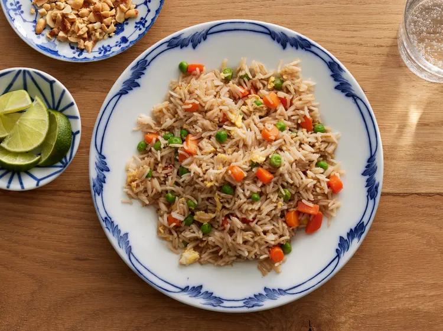

Fried Rice

Description
Fried rice is a traditional Chinese dish made with many ingredients including vegetables, meat, soy sauce, spices with your cooked rice. It's very customizable and is great for leftovers.
Fried rice is a great dish for your family that has the maximum flavor. It has many chopped veggies and bits of scrambled egg. This recipe makes it easy to recreate.
Ingredients
- 2/3 cups chopped baby carrots
- 1/2 cups frozen green peas
- 2 tablespoons vegetable oil
- 1 clove garlic, minced (Optional)
- 2 large eggs
- 3 cups leftover cooked and chilled white rice
- 1 or more tablespoons of soy sauce
- 2 tablespoons sesame oil
Steps
- Assemble Ingredients
- Place carrots and peas in a sauce pan with some water. Bring to a low boil and cook for 3 to 5 minutes. After that, drain in a colander.
- Heat a wok over high heat. Pour vegetable oil. Stir carrots, peas, garlic and cook for 30 seconds. Add eggs and stir to scramble eggs with vegetables.
- Stir in cooked rice. Add soy sauce and drizzle with sesame oil. Toss the rice to coat.
- Serve hot and enjoy!